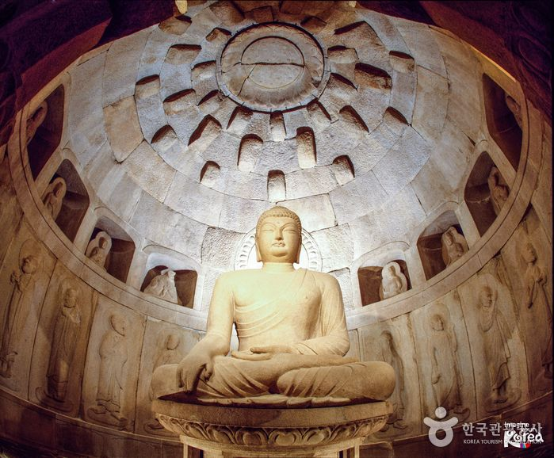
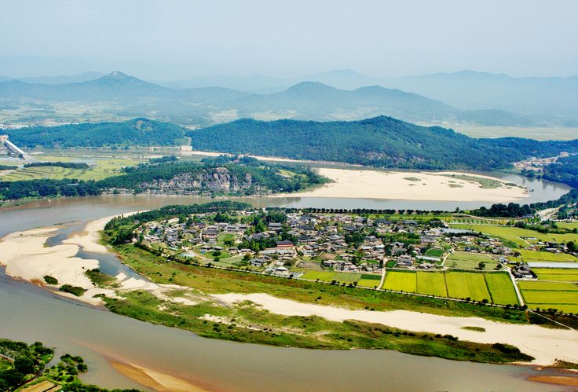
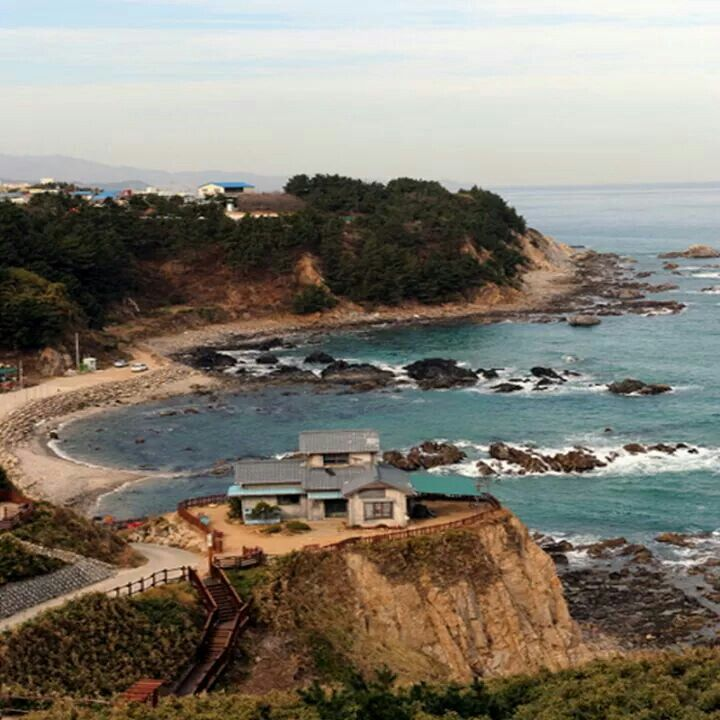
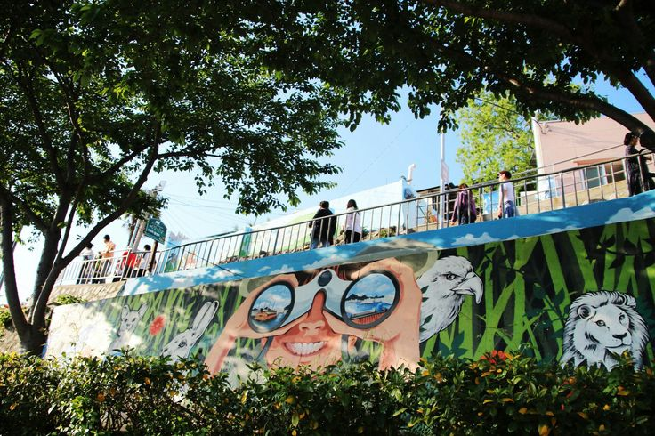
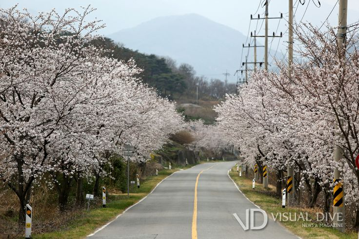
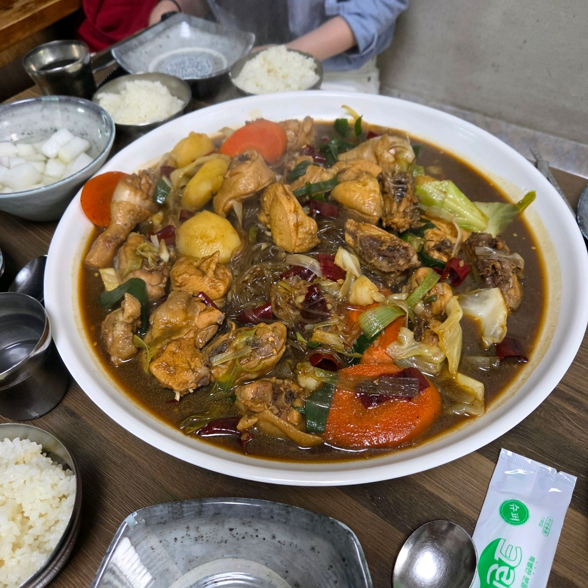
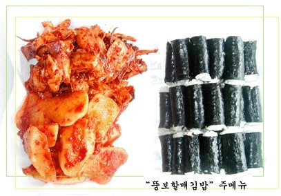

경상도
경상도는 유구한 역사와 함께 안동, 경주, 통영 등 전통과 현대가 어우러진 풍성한 문화의 보고입니다.
경상도의 관광지

경주 불국사 & 석굴암 (경북)
유네스코 세계문화유산으로 지정된 사찰. 불국사는 아름다운 전통 건축미, 석굴암은 정교한 석조불상이 유명해요.

안동 하회마을 (경북)
조선시대 전통 가옥이 잘 보존된 민속마을. 하회탈, 탈춤공연, 전통체험 등도 가능해요.

울진 죽변항 & 드라마 세트장 (경북)
드라마 촬영지로 유명한 해안가 마을. 등대와 바다 풍경이 인상적이고, 조용히 걷기 좋은 코스예요

통영 동피랑 마을 (경남)
벽화로 꾸며진 언덕 마을로, 바다를 배경으로 걷기 좋아요. 근처 강구안 항구도 함께 둘러보면 좋아요.

하동 화개장터 & 십리벚꽃길 (경남)
봄이면 벚꽃으로 터널이 되는 산책로. 전통 장터인 화개장터는 옛 감성이 가득해요.
경상도의 맛집

포항 이동삼횟집 (경북 포항)
포항 구룡포 인근에서 유명한 과메기와 광어회 전문점이에요. 신선한 활어회와 지역 특산물 과메기를 제대로 즐길 수 있어요. 겨울엔 과메기, 여름엔 회로 인기예요.

유진찜닭 (경북 안동)
진한 간장 양념에 감자, 당면, 닭이 잘 어우러진 찜닭. 안동구시장 근처에 위치해요.

뚱보할매김밥 (경남 통영)
밥과 반찬이 따로 나오는 충무김밥 원조 맛집. 오징어무침과 석박지가 감칠맛을 더해요.

송학식당 (경남 밀양)
밀양 스타일의 맑은 국물 돼지국밥. 부드러운 고기와 깊은 육수 맛이 매력적이에요.